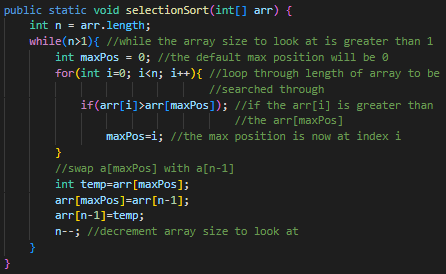

When you are trying to find an element in an array or list of elements, you will use a search method. There are multiple types of searching methods that can be used.
In Linear/Sequential search, the order of the elements does not matter. The user must provide the given information necessary to find the target element such as the array to look through and the target value. In this searching method, the program will find the first element that matches the target value and return the index of that element in the array/list. The time complexity of linear search is O(n) where n is the number of elements inside the list.
In Binary search, the order of the elements must be in chronological order (this example explains increasing order). The search starts off at the two endpoints of the list and checks the middle element to see if it matches the target after every run, then returns the index if it is equal. However, if the middle element is greater than the target value, then the rightmost endpoint will be changed to the middle element index - 1, and then the search will run again. The opposite occurs if the middle element is less than the target value, the leftmost endpoint will be changed to the middle element index + 1, and then the search will run again. The time complexity of binary search is O(log n) where n is the number of elements inside the list.
Sorting algorithms are a set of instructions that arranges the items in an array or list in a specific order. Ways in which sorting algorithms may sort include from ascending or descending numerical value, alphabetical order, reverse alphabetical order, and more!
Insertion sort assumes the first element in the list is already sorted, so it starts with the second element and compares it to the elements before it. Then, it will keep continuing to go to the next element in the list until the final element in the list is checked and sorted accordingly. Insertion sort takes the current element to be sorted and then compares it to the element right before it in the list, and then keeps going towards the first index of the list until it finds an element that is smaller in value than it, and then it will place the current value at the position so it is sorted. The average time complexity is O(n2), with the best case being (n-1) comparisons, and the worst case being n(n-1)/2 when the original list is sorted in reverse order.
Selection sort searches through the number of elements in the list, n, and then takes the max value and places it at the last index. Then, it will look through n - 1 elements in the list, and find the next max value and place it at the last index of the current number of elements being looked through. The value, n, will keep decrementing while it is greater than 1. The time complexity of selection sort is O(n2), and there is no best or worst case, the number of comparisons is always n(n-1)/2.
Radix Sort is a numerical sorting algorithm. It sorts an array by looking at each individual digit of a number (starting from least significant digit (LSD). In the number 675, the LSD would be 5, in the one's place, first sort the element by their LSD in the order they appear in originally. For example, If 874, 8, 63, 94 are in an array, the order of sorting by first digit would be 63, 874, 94, 8. Then, you move to the next LSD. Our array would then turn into 8, 63, 874, 94. This process continues until the array is fully sorted. In our case, the array is fully sorted once we complete looking at the hundred’s place: 8, 63, 94, 874. The time complexity of Radix Sort is O(DN) where N is the size of the array and D is the number of digits in the number with the most amount of digits. Since you have to loop through every digit in every element of an array.